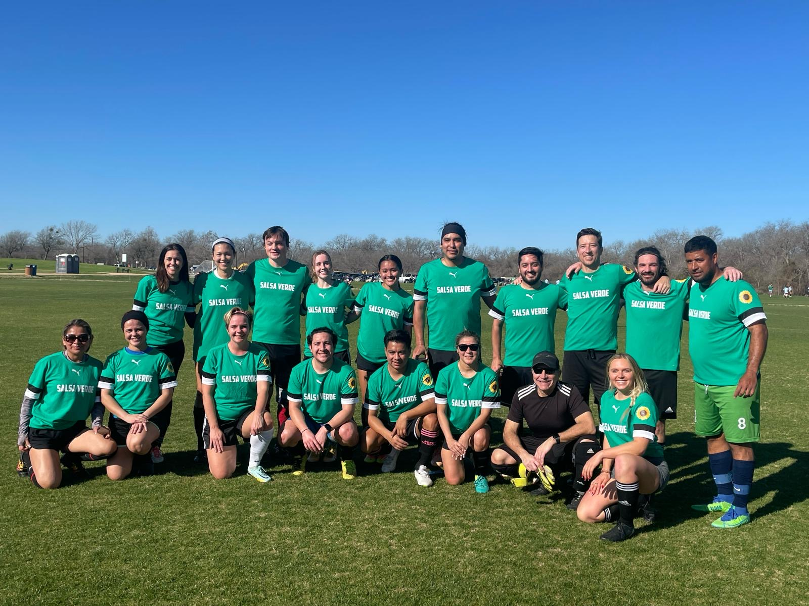
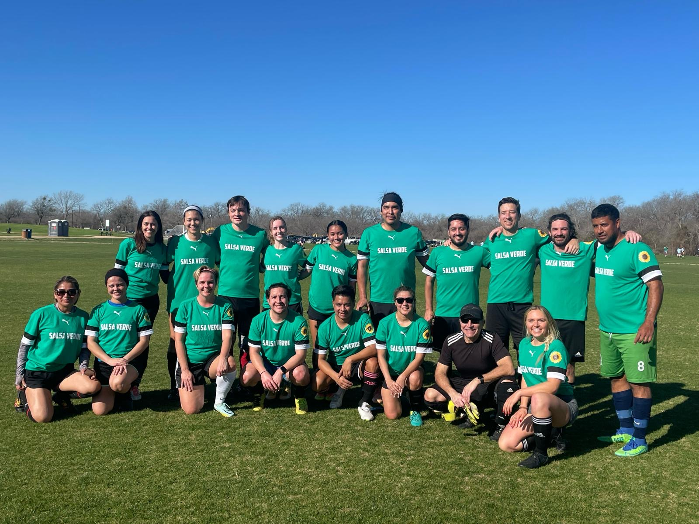

About Me
Hola y bienvenidos! Soy Óscar, and when I am not immersed in galaxies and Lyman-alpha research, you can probably see me doing some of the things below.
 

Playing Guitar
I play guitar and am passionate about rock and roll, blues rock, and soul rock. Music is a big part of my life and a source of inspiration. Ever since I have picked up the guitar during 2020 it has been a constant source of joy to be able to express myself creatively through the instrument. One day, I hope to play guitar like some of my inspiratiosn and Idols such as Slash, Synester Gates, Marcus King, Derek TrucK, Eric Clapton, but until then happy to be going on this journey of getting better day by day, little by little and making music that soothes me and perhaps other people as well. You can check out some of my music on soundcloud: SoundCloud Link
Playing Soccer & Fitness
I enjoy playing soccer whenever I am healthy and able to. It is a sport I have been playing since I was a wee lad, at the age of 7 years old. It is a sport that is technically really challenging but also really beautiful when you see really great ball control, individual skill and teamwork. I suppose that is why they call soccer the beautiful game. I love the challenge and camaraderie that comes from playing team sports. On the weekends you can probably find me on the pitch with my team HeartBeat City FC. I also dabble in pick-up soccer from time to time to keep the soccer chops up but overall mainly there to have fun and enjoy myself.
Playing Board/Card Games
I love hosting game nights and playing board and card games with friends. It is one of my favorite ways to unwind and connect with people. Something about the games has a way of bringing people together and also the ways you can strategize to win is always very facinating to me.
Going to Concerts
As you have probably gathered above my love of music is unreal and it goes beyond just playing the guitar. I had the great pleasure of seeing some of my favorite bands in person and it has been so much fun seeing my favorite artist in person for a show. Something about the live performance is hard to beat and there is something beautiful about it since that performance will never happen again. Here's a list of some of the bands/artist that I have seen in the past years.
- Guns N Roses
- The Marcus King Band
- Eric Clapton
- Tedeschi Trucks Band
- Red Hot Chili Peppers
- Gary Clark Jr.
- Black Pumas.
- The Strokes
- Hozier
- Sterephonics
- Hans Zimmer
- Trans Siberia Orchestra
- Santana
- Greta van Fleet